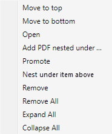
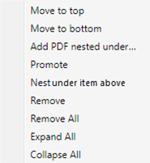
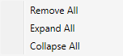

The SpecsIntact Package Builder provides shortcuts to organize the PDF files and bookmarks in the PDF Outline structure via right-click menus.
 What you have selected and the location of the selected PDF file or bookmark within the PDF Outline when you activate the right-click menu will determine what menu options are available. For instance, if you select an item already at the top level, the Promote option will not be available.
What you have selected and the location of the selected PDF file or bookmark within the PDF Outline when you activate the right-click menu will determine what menu options are available. For instance, if you select an item already at the top level, the Promote option will not be available.
PDF File
|
|
Bookmarks
|
|

|
|

|
PDF Outline Pane
|
|
|
|

|
|
|
- Move to top - Moves the selected bookmark or PDF file, along with any other bookmarks or PDF files nested underneath it, to the very top of the PDF Outline.
- Move to bottom - Moves the selected bookmark or PDF file, along with any other bookmarks or PDF files nested underneath it, to the very bottom of the PDF Outline.
- Open - Opens the selected PDF file for viewing.
- Add PDF nested under - Opens the Windows File Explorer, allowing you to select an external PDF file which will then be placed directly underneath the selected bookmark or PDF file in the PDF Outline.
- Promote - Moves the selected bookmark or PDF file up one level in the PDF Outline.
- Nest under item above - Moves the selected bookmark or PDF file directly underneath the bookmark or PDF file currently positioned above it in the PDF Outline.
- Remove - Deletes the selected bookmark or PDF file from the PDF Outline.
- Remove All - Deletes all bookmarks and PDF files from the PDF Outline.
- Expand All - Expands all bookmarks and PDF files in the PDF Outline.
- Collapse All - Collapses all bookmarks and PDF files in the PDF Outline.
How to Use this Feature
 To Access the Package Builder Right-Click Menus:
To Access the Package Builder Right-Click Menus:
- In Package Builder, perform one of the following:
- Right-click in the blank area in the PDF Outline pane
- Select a PDF file and right-click
- Select a bookmark and right-click
Users are encouraged to visit the SpecsIntact Website's Support & Help Center for access to all of our User Tools, including Web-Based Help (containing Troubleshooting, Frequently Asked Questions (FAQs), Technical Notes, and Known Problems), eLearning Modules (video tutorials), and printable Guides.